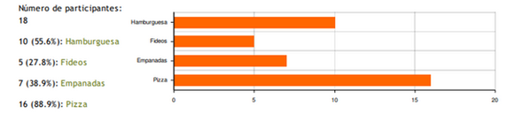
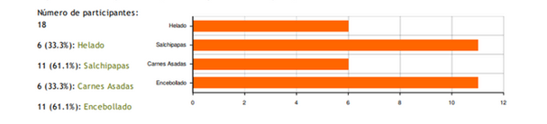
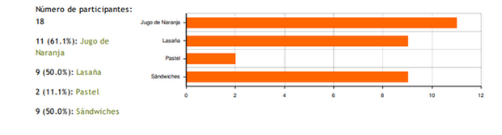
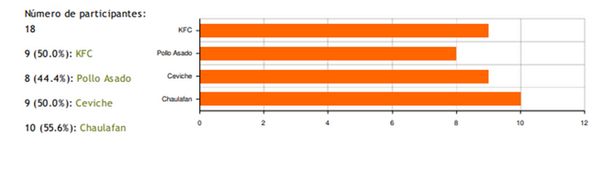
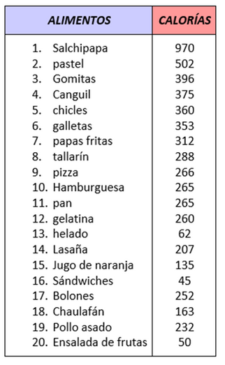
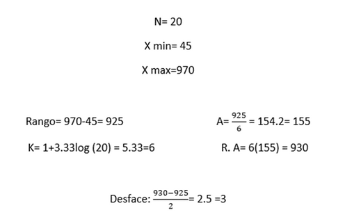
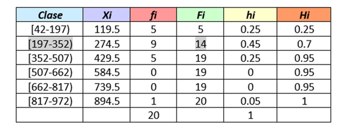
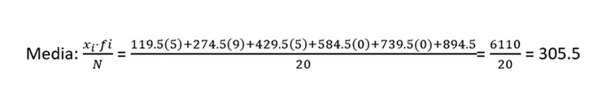
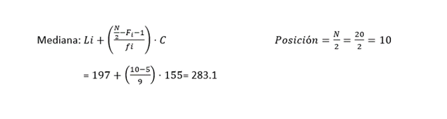
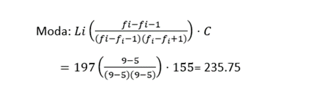

Alimentación SDG
Tras una encuesta realizada a los estudiantes del SDG para obtener su consumo medio de calorías se obtuvieron los siguientes resultados:
   Donde para encontrar las cantidades medias de calorías, se creó una tabla de frecuencias con todos los alimentos más consumidos y sus respecticas calorías
  Una vez obtenida la respectiva tabla de frecuencias se procedió a encontrar las medidas de tendencia central.
  
Trás encontrar las medidas de tendencia central se concluyó:
En base a la encuesta obtenida de los estudiantes del SDG se puede evidenciar que los estudiantes consumen calorías en un rango de entre 236 a 306 Cal por lo que se puede concluir que hay un exceso en el consumo, motivo por el cual cierta cantidad de estudiantes presentan un deterioro del control endocrino (acné), esto se da por el consumo de estos en las medias comidas, entonces si se controla el consumo de estas comidas y la dieta es cambiada a algo más balanceado (80 a 160 Cal) se puede dar un mejor equilibrio y dieta saludable.